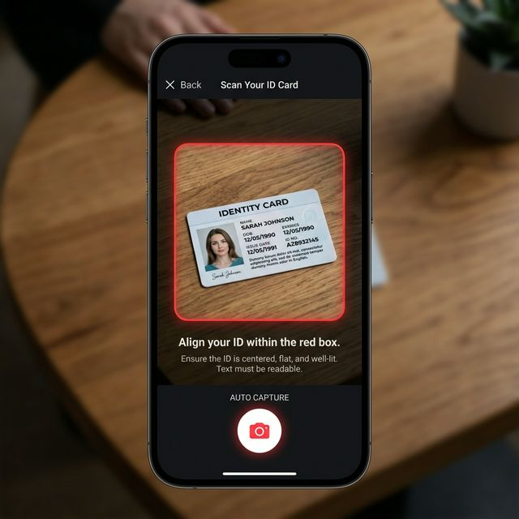

v37 Visual Walkthrough: Guided KYC
1. Identity Document Alignment
Users are now guided by a semi-transparent rounded rectangle frame. This prevents "sideways" captures and ensures all edges of the ID are within the high-resolution focal area.

2. Biometric Verification (Selfie)
The selfie step features an oval overlay optimized for facial alignment. The camera controller locks the orientation to portrait, eliminating rotation issues on variety of Android devices and emulators.
Technical Stability
By enforcing ResolutionPreset.high (1024x1024) and locking DeviceOrientation.portraitUp, we've eliminated the primary causes of KYC abandonment in production and instability on development emulators.